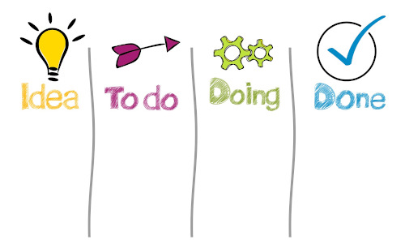
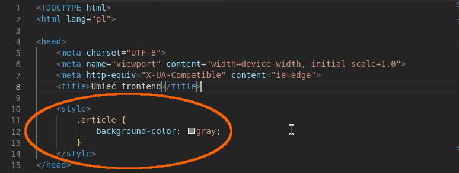
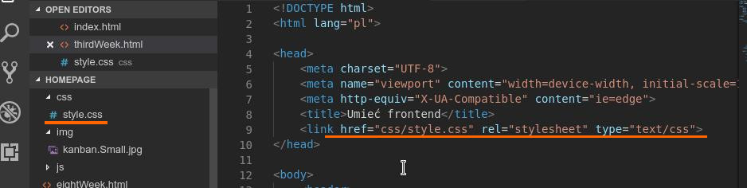

Trzeci tydzień nauki
Planowanie pracy
Pracę planujemy po to, żeby efektywniej ją wykonywać. Dzięki planowaniu wiemy co dokładnie mamy wykonywać, widzimy, jaki jest postęp tej pracy oraz ile jeszcze mamy do zakończenia danej pracy. Dzięki temu zawsze będziemy zajmować się dokładnie tym, czym powinniśmy, przy okazji unikając często efektu zagubienia się.
Kanban jest jedną z wielu metod planowania pracy, którą właśnie wybrałem. Kanban wymyślili Japończycy w latach pięćdziesiątych i w wolnym tłumaczeniu oznacza "spis widoczny". Kanban często jest to tablica podzielona na trzy kolumny. Pierwsza kolumna odpowiada za "TODO" czyli rzeczy do zrobienia. Druga odpowiedzialna jest za "DOING" czyli w trakcie. W tej kolumnie powinna być zapisana tylko jedna rzecz aktualnie wykonywana. Ostatnia kolumna jest kolumną "DONE" czyli powinna zawierać rzeczy ukończone.
HTML - znaczniki i atrybuty
<article>...</article> - wydzielona samodzielna treść
<p>...</p> - paragraf, czyli akapit
<b>...</b> - pogrubiony tekst bez znaczenia semantycznego
<strong>...</strong> - pogrubiony tekst, który podkreśla wysoką istotność, ważność frazy w nim zawartej
<i>...</i> - tekst wyróżniony kursywą bez znaczenia semantycznego
<em>...</em> - tekst wyróżniony kursywą, który jest często wykorzystywany do podkreślenia wypowiedzi
<a>...</a> - linki, łącza wewnątrz dokumentu
<a href="ścieżka docelowej treści" target="">opis łącza</a>
atrybut id - identyfikuje element
<element id="moj-identyfikator">
<br> - przejście do nowej lini
<img src="ścieżka do obrazka" alt="opis co przedstawia obrazek"> - obrazek o podanym adresie
Role i właściwości atrybutów
- atrybuty są "niewidzialne" - chowamy je w znaczniku
- nadają elementom dodatkowe właściwości (href, src)
- pozwalają na grupowanie elementów (class)
- pozwalają na identyfikowanie elementów (id)
- można je miksować
- spis atrybutów globalnych
https://developer.mozilla.org/en-US/docs/Web/HTML/Global_attributes
CSS - Sposoby stylowania
Stylowanie za pomocą elementów - nie jest to najlepszy sposób stylowania, ponieważ przy większym projekcie można się pogubić oraz mieć problemy z odpowiednim wyszukaniem, doborem selektora.
main section article p {
właściwość: wartość;
}
Stylowanie za pomocą klas - jest to zalecana metoda. Nazewnictwo klas stosujemy w języku angielskim.
camelCase - do łączenia wyrazów wykorzystuję notację wielbłądziom
Nazewnictwo klas
- używaj pojedyńczych słów z j. angielskiego
- nazywaj rzeczy zgodnie z ich funkcją na stronie
- nazwy rozpoczynaj z małej litery np. article nie Article
- nie zaczynaj od cyfry
- jeśli nazwa składa się z dwóch słów użyj notacji wielbłądziej (camelCase)
- staraj się, żeby element miał jedną klasę
<znacznik class="name'>treść</znacznik>
.name {
właściwość:
wartość;
}
Styl przy znaczniku HTML z wykorzystaniem atrybutu "style" - takie stylowanie nie jest dobrą praktyką.
<znacznik style="color:blue;">treść</znacznik>
Styl w znaczniku "style"- z takim stylowaniem możemy się spotkać, jednak najczęściej najlepszym wyborem jest używanie stylów w osobnym pliku "style.css".
Style osadzone w zanczniku "style".
Style umieszczone w osobnym pliku.
Jak działa przeglądarka
http (Hypertext Transfer Protocol ) - protokół do transportowania całej zawartości strony. Obecnie rekomendowane jest używanie htpps, czyli połączenia szyfrowanego.
url (Uniform Resource Locator) - adres strony
Komunikacja przeglądarki z serwerem odbywa się w modelu request-response.
Schemat działania
- Wpisuję adres strony w przeglądarce.
- Przeglądarka szuka serwera strony pod podanym adresem [DNS].
- Następnie odpytuje serwer o index, gdy podamy sam adres. To co jest indexem zależy od konfiguracji serwera.
- Serwer wysyła zawartość html.
- Przeglądarka wczytuje html i wyszukuje wszystkich zasobów: style, obrazki, skrypty itp. i dla każdego z zasobów wykonuje osobne zapytanie do serwera.
- Przeglądarka prasuje i renderuje stronę.